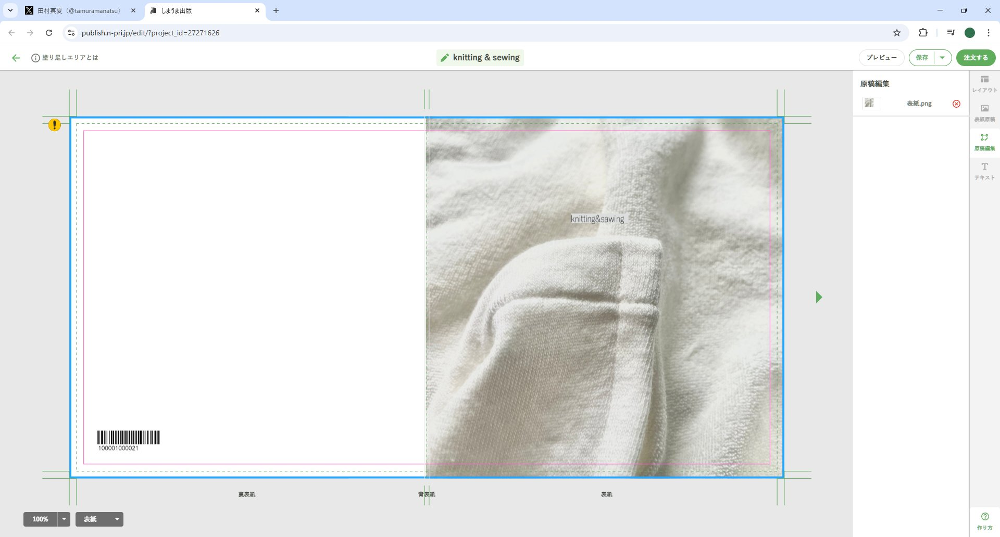
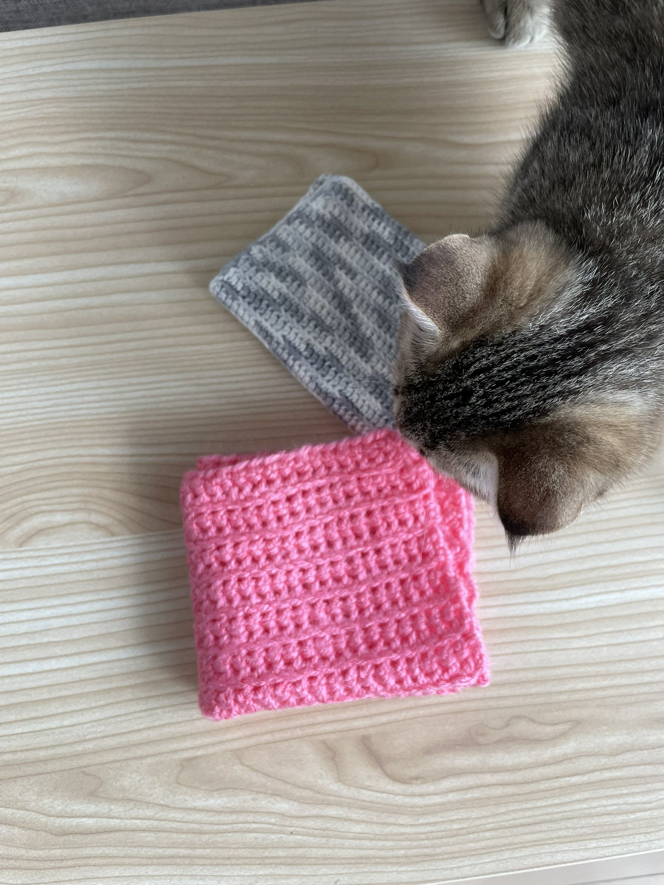
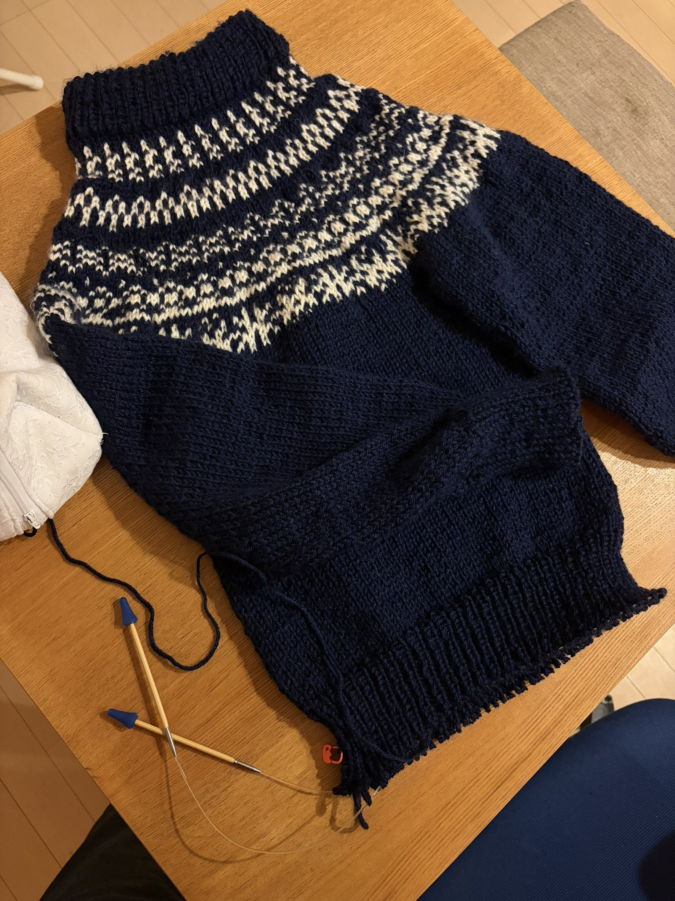
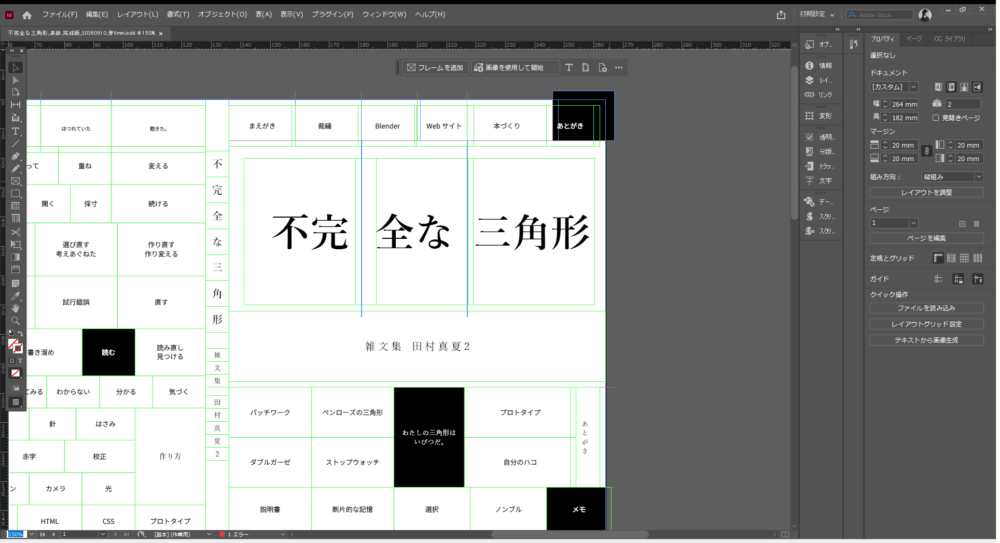
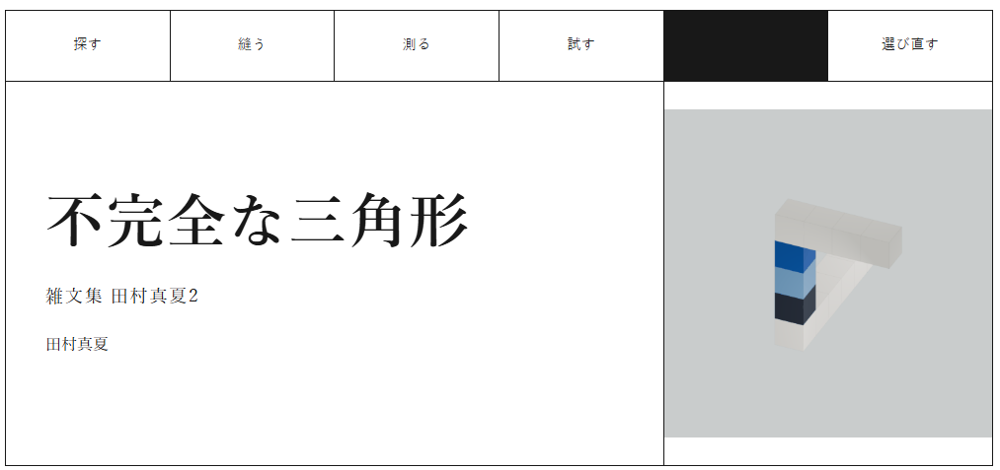
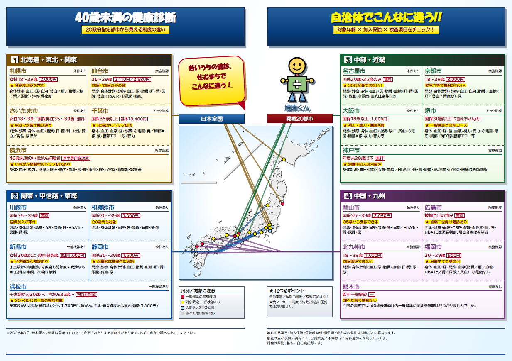
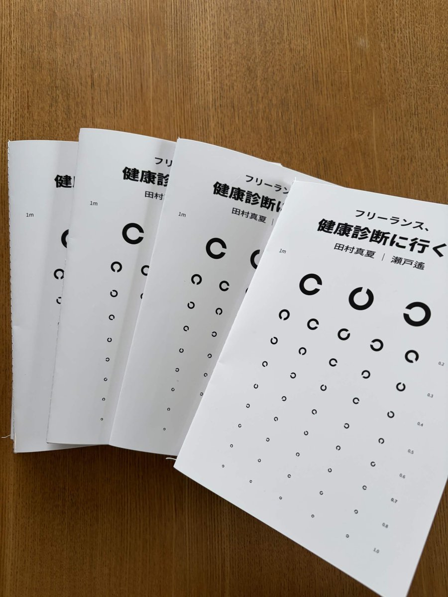
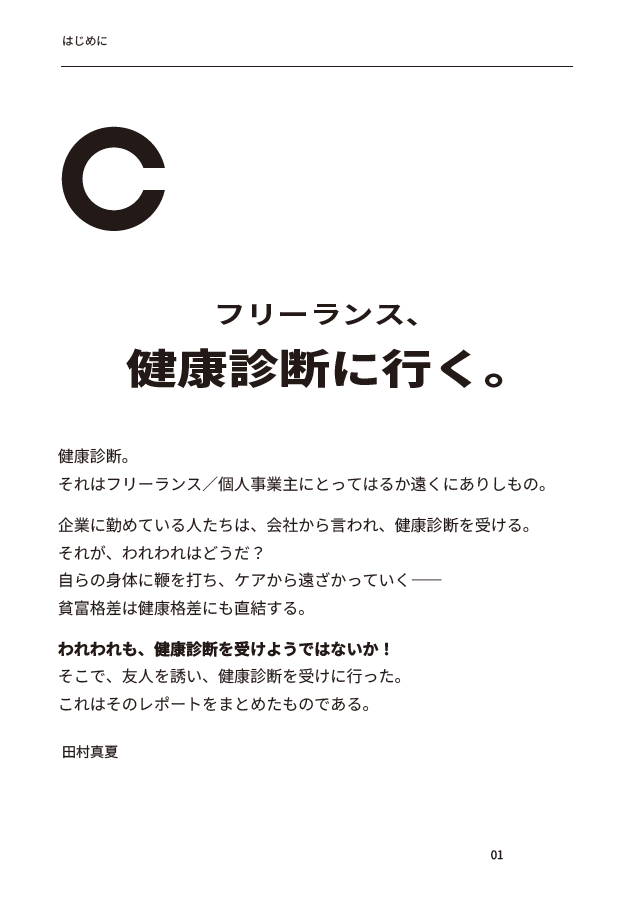
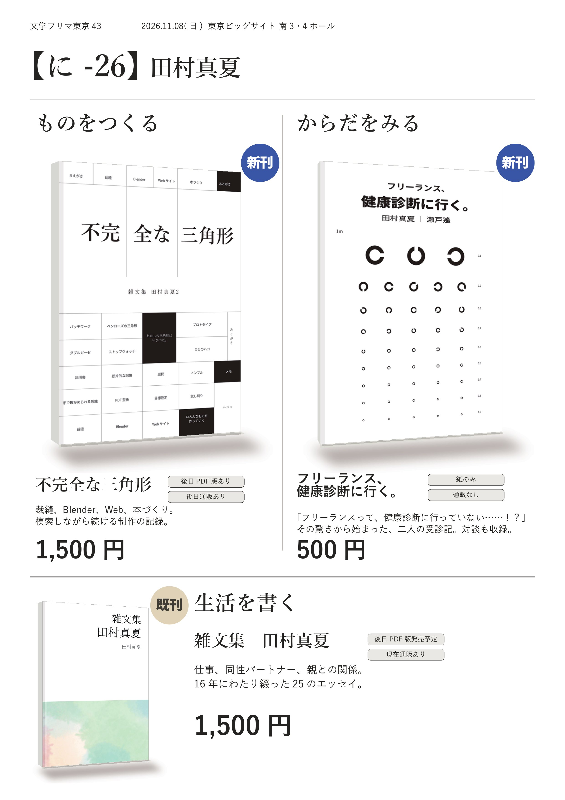
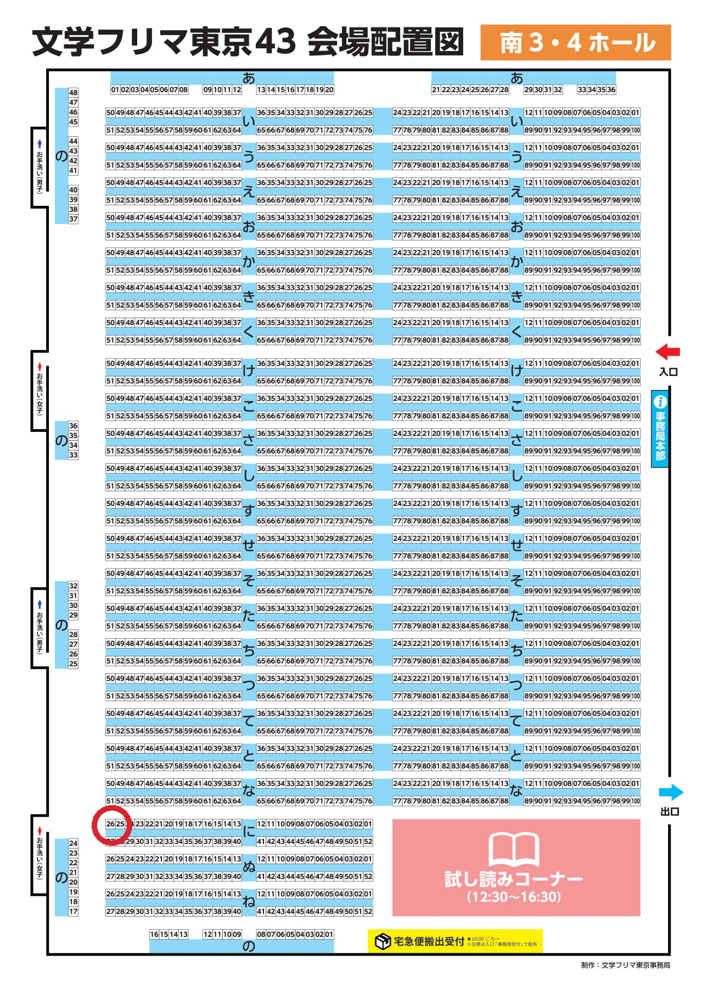

文フリ直前SP！『不完全な三角形』『フリーランス、健康診断に行く。』徹底解説：10月の月報
文学フリマ東京43（at.東京ビッグサイト、2026年11月8日）が近づいてきました。今回の月報は、その直前スペシャル（SP）といった趣向をとってみます。何しろ、10月とにかく頑張ったのが、そこで出す新刊『不完全な三角形――雑文集 田村真夏2』と新刊ZINE『フリーランス、健康診断に行く。』の準備作業なのです。


どこでも語りつくせない工夫や小ネタをここでたくさん喋ろうと思います。ご興味のある方は、どうぞお付き合いください！
『不完全な三角形――雑文集 田村真夏2』
2作目のエッセイ集です。『雑文集 田村真夏』のときにはじめて自分の本を自分でイチからデザインするのに挑戦しました。Adobe InDesignというプロ仕様のアプリケーションも購入して、毎日せっせこせっせこと勉強していたように思います。それを一年ぶり？ くらいにやったのですから、まあ、たいへんでした。
最初のタイトルは『Knitting & Sewing』だった
本を作るうえで、テーマを決めました。前作はかなり「昔の自分をお見せする本」でしたから、2作目は「今の自分」を見せたいな、と思いました。
そのときにちょうど手芸系のエッセイを公式サイトにアップロードし始めていたので、最初は手芸本にしようと思っていました。失敗作もたくさん載せた写真集といったイメージです。一年くらい前に書いた手芸系のエッセイ（左利きと手芸、アップサイクルが大好きだ、我流で因縁のシュシュを編む）に「『Knitting & Sewing』に掲載予定」のようなことが書かれています。その『Knitting & Sewing』というのが、『不完全な三角形――雑文集 田村真夏2』の原型です。

このときは、ブラウザで編集できる印刷所でサクッと作ろうとしていました。が、フォントにちょっとこだわりを入れたいなあとか、読みやすいように本文を工夫したいなあとかいろいろ考えているうちに「InDesignでやったほうが早くね？」と思うようになったのです。そこからかなり方向性が変わりました。
『Knitting & Sewing』から『不完全な三角形』へ
このとき、タイトルを『Knitting & Sewing』から変えたくなりました。というのも、当時わたしはknitting（棒編み）ができなかったんです。crochet（かぎ編み）でハンカチを作るくらいで、knittingはからきしでした。それなのにタイトルは「knitting」。まずそこの矛盾を解消したいな、と思うところから始まって、crochet & sewing ? とかいろいろ考えていたのですが、その途中で、そもそもわたしって、「手芸」だけを楽しみに生きているわけじゃないよね？ と思うに至りました。

そこから、わたしの作っているものってなんだろう？ と考えるようになりました。わたしって、本を作るのが好きだし、デザインを考えたりするのも好きなんですね。Webサイトも自分で作ってきたし、レゴも好きですし、動画制作にも興味があるし、Blenderとかもそうだし、時間とスペースさえあれば木工や3Dプリンターもやりたい。……わたしがいま熱中できるのは「ものづくり全般」なのかもな！ と思いました。どれもスキルとしては中途半端（不完全）ですけど、わたしの好きな形（三角形）にはなりつつあるもの、ものづくり。今のわたしに書けるものづくりの本、という意味合いをつけて、タイトルは『不完全な三角形』にしました。
副題に「雑文集 田村真夏2」とつけたのは、これがエッセイ集だからです。田村真夏が書いたもので、エッセイ集として出すものには「雑文集 田村真夏」とつけたいな、と思っています。「雑文集」だけで10冊も20冊も作っていきたいですね。子供のころ、さくらももこのエッセイ集を読むだけで幸せでした。さくらももこのエッセイ集って、一目で「さくらももこだ」って分かるんですよ。そういうものをわたしも作りたいです。つまり、『不完全な三角形――雑文集 田村真夏2』と前作『雑文集 田村真夏』はエッセイ集であるという共通点があるだけで、内容に関連性があるわけではありません。このあたりの説明もしたことがなかった気がします。そういうこととして理解いただけましたら幸いです。
デザインと本文をつくる
デザインや本文についても触れておきます。この本、ほとんど書き下ろしです。文字数で言うと約11,000字だったと思います。最初は24Pのミニ写真集で考えていたのに、122Pのしっかり文量のある本になってしまいました！ 書くのは楽しかったです。なにしろ、好きなことしか書いていませんから。
ただ、書いている合間にもいろんなものを作り続けているので、どんどん書きたいことが増えるのには困らせられました。結局、この本の編集作業をしている間に、最初できなかったknitting（棒編み）もできるようになってしまったんです。いま本文構成から直せるなら、編んだセーターの画像も入れるでしょうね。

デザインは自力で。それを実現するのにはAIも活用しました。この本の表紙は白黒のマス目で構成されていますが、これは「作りかけの索引」のイメージなんです。わたしの頭の中にある雑多なものづくりの単語やフレーズを並べています。これをInDesignで1マスずつ作っていくんですが、これがまあ、自力で1列くらい作ったらえらい作業量で腱鞘炎になるかと思ったので（笑）、ここはAIに手伝ってもらいました。わたしがすでにやっている工程を、よりAIにやりやすいように効率化し、作業してもらいました。もちろん最後は自分の目で数mm調整したりはしたんですけど、本当に助かりました。

本文にもいろいろな工夫を入れています。この本を作っているとき、複数の知人・友人に「どうして紙（の本の制作）なの？」と訊かれました。今の時代、電子書籍もめずらしくないですし、マンガなどに目をやると単行本以外の売り方が主流になりつつある（なっている？）状況でもありますよね。そんな中で、どうして「紙の本」を作りたいのか、という質問には、なるほどな、と思わされました。
それでいろいろと考えたんですが…… 紙の本の良いところは、物理である、ということだと思うんです。ぱらぱらめくって、目についたところから読む。読み 止 しのままそこらへんに置いておいて、ぱっと開いたときに目に留まったものがこころに残る。そういうセレンディピティが発生しやすいのが、紙のよさだな、と思いました。
というわけで、ぱらぱらめくったからこそ面白くなる仕掛けを本文中に作りました！ それってどんな仕掛け？ と思った方は、ぜひ文学フリマ東京43＠東京ビッグサイトに遊びにきてくださいね（宣伝！）。
ちなみに、『不完全な三角形――雑文集 田村真夏2』は、一部を試し読みできるようにしています。冒頭の「まずは手縫いから」というエッセイを読めるようにしました。ぜひこちらからご覧くださいね。
ここでは（本の話ではないので）書かなかったのですが、特設サイトづくりも本当に頑張りました。デジタル表現でできる『不完全な三角形――雑文集 田村真夏2』を最大まで試してみました。こちらもぜひ、ご覧になってみてください。

⭐東京が遠いよ、という方向けに、後日通販もする予定です！ PDF版も同時発売する予定ですが、本棚に余裕のある方はぜひ、紙の本がおすすめです！！
『フリーランス、健康診断に行く。』
さて、もう一冊の目玉、ZINE『フリーランス、健康診断に行く。』です。これは友人の瀬戸遙さんとの共作です。田村真夏がひとと作った作品を世に出すのははじめてです。楽しかったな！
フリーランスって本当に健康診断に行かないのか？
個人事業主になってみて、はじめて「健康診断に行くのだるいなぁ」と思うようになりました。それまで当たり前に行なっていたことなのに、なんだかやたらと面倒なんです。これは物を書く仕立てにして尻に火をつけたほうがいいな、と思い、周りの人たちに声をかけてみました。そうしたら、新卒からフリーランスとしてご活躍されている瀬戸さんから詳しくお話を聞くことができました。
ここで、衝撃の事実が。なんと瀬戸さん、健康診断には、大学卒業後行っていないとのこと！ 「いや、それは行った方がいいよ！！！」とでかい声がでました。 せっかくの機会ですから、ふたりとも健康診断に行ってそれをレポートとしてまとめたZINEを作りますか、ということで話がまとまりました。
「ふざける」が心底楽しい
お互いの居住地がやや遠いので、それぞれ行くことに。結局そこは個人戦なので、行くまでがめっちゃかかる。お互いに何通もメールで「まだ行けてないです」とやりとりをしましたね……。 （※瀬戸さんはその間かなりお忙しかったタイミングでした。田村は、惰性でした）
行くまでの間、本当に病院に行きたくないので、下調べを結構した。調べたものを役人の作ったクソダサパワポ風にして、しかもPowerpointではなくhtmlで作ったりしました。何をしているんだろう……。
でも、この時間が本当に楽しかった。「全力でふざける」って楽しいんだな、と久しぶりに思いました。

行くまで永遠、行ったら完成
締め切りがあるというのはありがたいことで、夏が終わったころ、わたしも瀬戸さんも健康診断を済ませることができました。そこからはものすごい速さで仕事が進んでいきました。対談に至っては、対談した日の翌週の頭には仮原稿を仕上げていただきました。瀬戸さん、すごすぎる！ 対談パートは、瀬戸さんのXにて一部スクリーンショットを見られます。ぜひご覧ください。
瀬戸遙さんの投稿をXで見る
表紙と本文のデザインはわたしが担当しました。
表紙には「健康診断→視力検査→ランドルト環」という発想から、ランドルト環を配置しました。（でも田村も瀬戸さんも、今回の健診で視力検査はしていない。何それ？）
ランドルト環のサイズも計算しました。1m先に表紙を置いたら簡易視力測定ができるようになっている…… はずです。印刷の具合とかで正確にできているかはわからないので大っぴらには言っていないのですが、当初はそういう発想でした。来られた方はぜひカウンター越しに簡易視力測定をしましょう！ 文学フリマの机の奥行は45cmなので、わたしが本を両手に持ち、お客さんが一歩足を引くとちょうど簡易視力測定ができるくらいの距離になるはずです。
本文づくりも楽しかったですね。ZINEって、少し雑誌っぽい、っていうイメージですよね。既存の「本ありき」にとらわれないデザイン。
とはいっても、わたしも瀬戸さんも、生きているのは文章畑が中心。出そろった文章も、紙面に配置する飾りではなく、メインとして置きたいものだなあと思いました。というわけで、文章をしっかり読めるような構成にしたいな、とか、読みやすさを重視したいな、とか、そういうことを考えながら手を動かしました。何回もプリンターで試印刷して微調整を繰り返しました。

それから、この冊子ですが、田村がミシンで縫いました！！ ミシン縫い、意外とできるものです。ただ個体差が結構あるので、そこは本当にすみません。精進します。いわゆる「自家コピー本」にあたるのですが、それ以上のクオリティになったかな、と自分では思っております。ぜひ当日、お手に取ってみてください。
たくさんの工夫をしている『フリーランス、健康診断に行く。』ですが、田村がミシン縫いをして作っている関係で、増刷が非常に難しい造りとなっております。ですから、今回は文学フリマ東京43限定という仕立てにしてみました。
ただ、そのかわり、田村が毎日ミシンを踏んで大量に作りまくっておりますので、ぜひみなさま、【に-26】に遊びに来られた際は手に取ってください！

というわけで、10月の月報は、ひと月以上かけて作りこんだ2つの新刊について、裏話を書きました。今こうしている間も『フリーランス、健康診断に行く。』の印刷を続けており、自宅が小さな印刷所の様相です。ここからまた製本をがんばります。
『不完全な三角形――雑文集 田村真夏2』『フリーランス、健康診断に行く。』は、ともに、11月8日（日）に東京ビッグサイトで開かれる文学フリマ東京43で販売予定です。 詳細は文学フリマ東京43の公式ページをご覧ください！
お品書きと、わたしのブースの場所も掲載しておきますね。




それじゃあ、またね。
東京ビッグサイト、南３・４ホール、【に-26】でお会いしましょう！